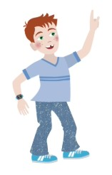

Controle van het geluid
Werkt het niet, meld dit aan je docent.
Luisteren naar de uitleg


Opgave 1
Sophie heeft 1 briefje van €10,
2 muntjes van €2 en 1 muntje van €1.
Hoeveel euro heeft Sophie in totaal?

Opgave 2
Tom heeft 3 rode blokken, 6 blauwe en 4 groene blokken.
Hij stapelt alle blokken. Hoe hoog wordt zijn toren?

Opgave 3
Het is nu 3 uur. Over twee uur moet Lisa naar muziekles.
Hoe laat is het dan?

Typ "uur" of gebruik het fysieke toetsenbord.
Opgave 4
Jasper gooit in totaal 10. 4 ogen dobbelt hij met de ene dobbelsteen,
hoeveel ogen moet hij met de 2e dobbelsteen gooien om 10 te krijgen?

Opgave 5
Tom en Lisa tellen hun snoepjes. Tom heeft 6 snoepjes, Lisa 9 snoepjes.
Hoeveel snoepjes heeft Lisa meer?

Klaar
Je bent nu bij het eindscherm. Controleer of je alle opdrachten hebt gemaakt.